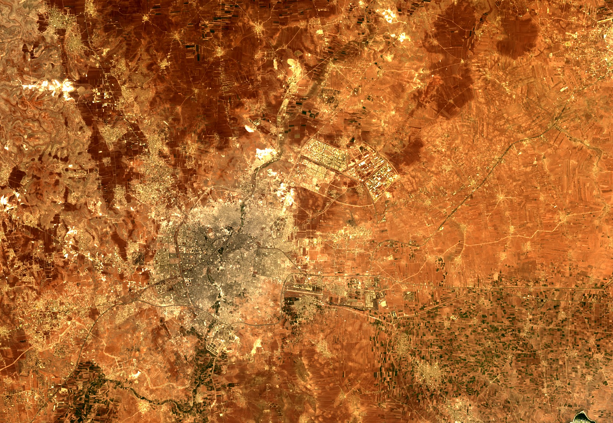

Fourteen years of war hollowed out Syria's statistics. The new government's numbers are disputed, independent surveys barely exist, and much of the country sat outside any ministry's reach for a decade. When a place stops counting itself, you measure it from orbit: the light a city emits at night tracks its economic activity, and a satellite logs it whether or not anyone files a report.
So we built quarterly nighttime composites of Syria's three largest industrial zones, from the start of 2024 through mid-2026: ten quarters, with all of Assad's last year as a baseline. Drag any slider to watch it change.
Adra (Rif Dimashq): Syria's largest industrial zone, ~7,000 hectares, nearly 2,000 factories pre-war.
Sheikh Najjar (Aleppo): Aleppo's main planned industrial city, 10 km northeast of the city center.
Hisya (Homs): 47 km south of Homs, on the Damascus–Homs corridor.
Two other sites are too small to resolve reliably at VIIRS's ~500 m pixel and are excluded: Layramoun (Aleppo) and Bab al-Hawa / Sarmada (Idlib), the cross-border cluster at the Turkish frontier, whose ~2 km footprint sits at the noise floor.
Mean nighttime radiance at each zone, by quarter, in nW/cm²/sr.
| Industrial Zone | Q1 ’24 | Q2 ’24 | Q3 ’24 | Q4 ’24 | Q1 ’25 | Q2 ’25 | Q3 ’25 | Q4 ’25 | Q1 ’26 | Q2 ’26 | Net change |
|---|---|---|---|---|---|---|---|---|---|---|---|
| Adra · Rif Dimashq | 3.0 | 2.7 | 3.0 | 2.9 | 2.9 | 3.4 | 3.5 | 3.7 | 4.2 | 5.1 | +68% |
| Sheikh Najjar · Aleppo | 2.1 | 1.7 | 2.0 | 2.1 | 2.0 | 3.6 | 3.2 | 3.8 | 3.4 | 3.9 | +86% |
| Hisya · Homs | 2.4 | 1.9 | 2.3 | 2.3 | 1.8 | 3.0 | 2.7 | 3.4 | 3.3 | 3.7 | +54% |
Each panel runs through the ten quarterly composites for one zone. Drag the slider or click a quarter. Night shows VIIRS radiance, with the mean in the corner; Day shows 30 m true color of the same site.
In 2024, Assad's last full year, all three zones are flat: Adra near 2.9, Sheikh Najjar near 2.0, Hisya near 2.2, with no upward drift. Whatever Syrian industry was doing under Assad, it wasn't growing.
Sheikh Najjar and Hisya move together. Both bottom out in early 2025 (the cloudiest months, and the chaotic weeks after Assad fell), then jump in spring and keep climbing to their highest readings by Q2 2026. Sheikh Najjar goes from about 2.0 to 3.9, Hisya from 2.2 to 3.7, well ahead of the rest of Homs.
Adra, the largest zone, climbs instead of jumping: 3.4, 3.5, 3.7, 4.2, 5.1, quarter after quarter, ending well above anything under the old regime. The rise tracks Damascus's broader recovery.
The timing is the tell. The jump comes in spring 2025, before the Kilis–Aleppo gas pipeline reopened in August. If electricity were the driver, the break would come later; it came earlier. That points to factories restarting and workers returning as security held, with the grid sustaining the recovery rather than starting it.
Read the trend, not any single quarter; cloud cover and clear-night counts make each point noisy. The flat 2024 line shows no seasonal swing, so the climb from spring 2025 on is real growth, not brighter summers. Year on year, Q2 2025 to Q2 2026, Adra is up about half, Hisya a quarter, Sheikh Najjar a tenth. (Q2 2026 runs through mid-June.)
At 500 metres, VIIRS only catches big, bright, concentrated zones; small workshops and scattered light industry don't register. So this is evidence about Syria's major industrial sites, not the wider manufacturing base, which could be moving the other way.
And it measures light, not output. A zone can brighten because it added a shift, or just because the grid came back and the same factories now stay lit after dark. The Day toggle is there to tell those apart.
The daytime frames are NASA's Harmonized Landsat–Sentinel imagery at 30 metres, sharp enough to pick out buildings, lots and new construction. Day shows whether a zone is there; night shows whether it's running. Where the buildings are intact and growing and the night radiance is climbing, the zone is genuinely back. (Sub-metre detail would need commercial imagery, which this project doesn't use.)
Nighttime data: NASA VNP46A1 (VIIRS Day/Night Band) daily granules via NASA Earthdata (EDL), ~500 m resolution. All three zones fall within a single tile, h21v05.
Quarterly composites: For each zone and quarter (Q1 2024 through Q2 2026, with all of 2024 serving as the pre-transition baseline), we average per-pixel radiance across the quarter's clear nights, applying the project's per-pixel cloud mask. Each zone is a square footprint (Adra and Sheikh Najjar 13 km, Hisya 10 km) centered on the site. Q2 2026 is still in progress and uses the quarter's clear nights through mid-June.
Clear-night selection: We use the project's standard quality filter on the per-date governorate records (cloud cover below 0.2, lunar illumination at or below 20 percent, and no swath-edge overlap), taking up to the ten clearest nights in each quarter. Winter quarters (Q4, Q1) yield fewer clean nights, which contributes to the recurring first-quarter dips.
Daytime data: NASA Harmonized Landsat–Sentinel (HLSS30 / HLSL30 v2.0), 30 m, true color (bands B04/B03/B02). For each zone and quarter we search CMR over the same footprint, take the clearest scenes (lowest cloud cover), mask cloud and shadow with the Fmask band, and median-composite. Authenticated with the same EDL token.
Note on absolute values: These are full-quarter composites, so the radiance figures run lower than the clearest-October-night composites in the companion piece (“Syria's Lights Tell a Complicated Story”); the trajectories, not the absolute levels, are the point.
Limitations: VIIRS detects only large, bright, concentrated industrial activity; smaller and distributed manufacturing is invisible. Emitted light is a proxy for activity, not a direct measure of output. Read the quarter-over-quarter trend rather than any single composite.
MENA Nighttime Lights Analysis Project · June 2026